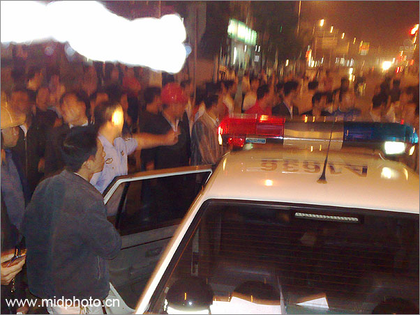
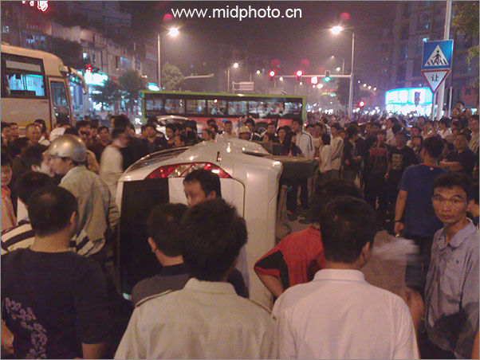
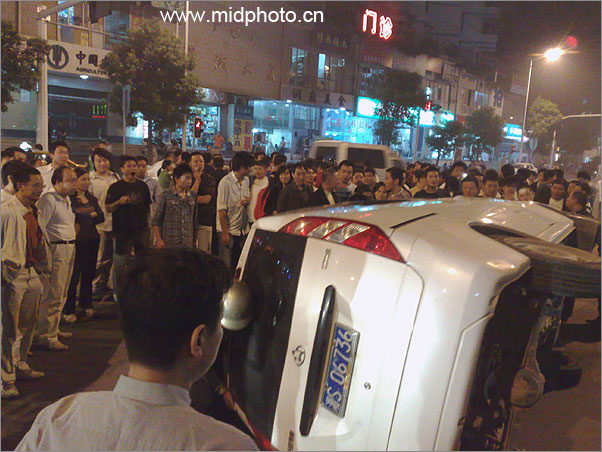
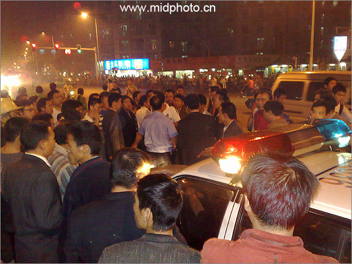
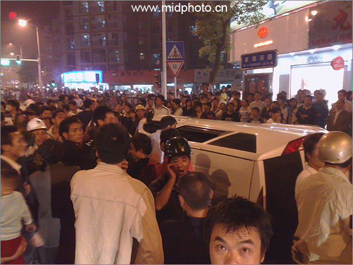
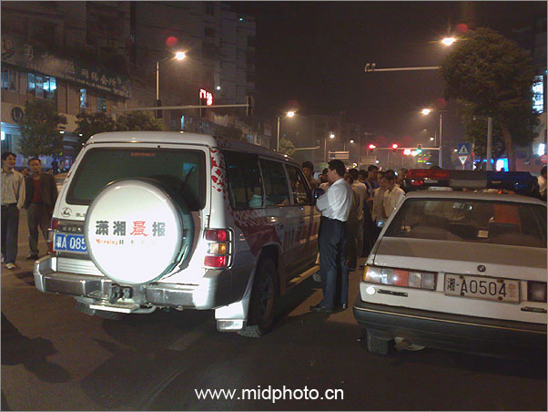
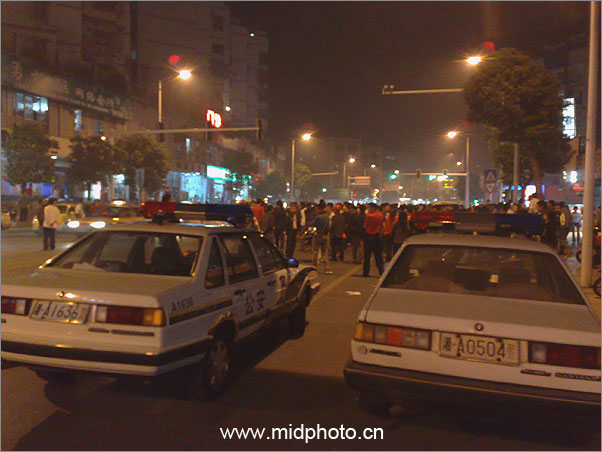
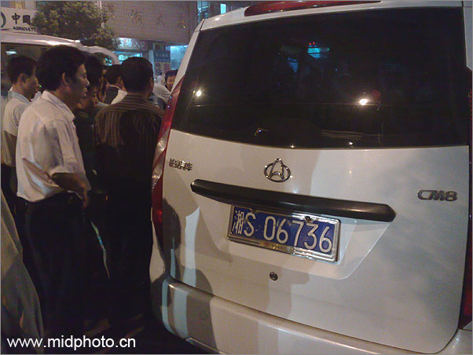

|
记一次群体袭警事件（长沙2008.10.21）
2008年10月21日晚6点半我路过湖南大学天马学生公寓大门口，突然一辆摩托车狂冲过来，急刹停在我旁边几米处，本人骑电动车一向遵纪守法，对摩的逆行急刹乱停行为向来深恶痛绝。正想国骂两句，还没等我开口，一辆白色捷达跟着摩托车也狂冲过来，一声尖厉刹车停在摩托车前面，车没停稳就冲出两人，抓住摩的司机就往下拽。紧跟着街对面也冲过一人，三个人围着摩的司机拳脚相加，其中一个体形稍胖者最凶，勒住摩的司机的脖子往下扯：看你还跑！胖子边打边吼。
天马学生公寓门口侯客的几个摩的司机都跑了过来，路人也围了上来。虽然三个打一个，但这个摩的司机死死抓住车把就是不松手，高声叫喊：打人了！打人了！一会儿围观者众，这三人不打了，但依然抓住摩的司机的衣领。摩的司机说：凭什么抓我？胖子答：抓的就是你，说着又抓住摩的司机衣领往下拽。人群中开始有人起哄，摩的司机调门顿时升高：拿证件来，凭什么打人！
天马学生公寓门口是个车多人多的丁字路口，围观的人越来越多。几个戴头盔者（公寓门口侯客摩的司机）围住了摩托车，和打人者高声理论起来。我骑着电动车没法进人群。一会儿，理论的几个人变成对骂，再一会儿人群里有人喊打，胖子说道：你敢动手！这时戴头盔的越来越多，大约有十来个，不知道谁先动了手，一哄而上，胖子三人变成了挨打的。胖子夺路就跑，一边喊道：这还了得？跑出十几米开外，人群没跟上。
我这才发现十几米开外不知何时跟来一辆桑塔那警车，没有开警灯也没响警报停在那里。胖子狂奔上了警车。顿时警灯闪闪警报大作，喇叭高喊：人群退后！
胖子本来是三人，另外两人不知何时回到了那白色捷达，发车掉头就跑。经过警车旁，那胖子打开桑塔娜车门喊：踩一脚！白色捷达停了下来，胖子身手敏捷跳下桑塔娜警车，钻进捷达车，然后一溜烟开走了。此捷达牌照为湘ABx3x9x5，不是警车。
这时警车也倒车开始移动，哪知道由那些戴头盔者带头，人群没散，反而过来围住了警车。此时戴头盔者有十来个，人群大约五十人。警车被围无法开动，一个制服警官打开车门下来，要人群让开。但此警官一下就被人群围住，戴头盔者和警官理论起来。只听得其中一个人说道：不搞清楚就别走。
这时另外一辆警车闪着灯开了过来，下来两个警官。一辆三轮摩托也跟着警车，下来三个穿制服的治安队员。警方力量顿时加大。但此时也围过来更多摩的，戴头盔者增加到二十来人，围观人群也爆增，至少有两百多人，警官顿时被人群包围住，起哄者大有人在。
此时戏剧性变化突然出现：两个戴头盔者冲出人群，跑到街对面，只听轰隆一声，几个人一下子就将街对面一辆白色长安CM8面包车掀翻。一个警官冲了过去抓住为首者，扭住了他的胳膊，看似要将他带回警车。但人群也围了上来，有人高喊：不准走！警官无法突围。
此时在外面的只有两个警官，被人群团团围住。我觉得警官此时比较危险，有可能被打，因为人群气氛很高，起哄者众。两台警车里面都有人，但没有人下来支援被围的警官。
还好我预计的警民斗殴事件没有发生，摩的司机一方两个带头大哥制止了人群，开始和警官理论起来。一会儿，貌似双方和解，两个人帮助警官又将白色长安CM8面包车抬正。我看了下面包车没有什么伤，只是刮掉点油漆。
白色长安CM8面包车牌照为湘S06736，按道理也算警方车辆。我这才明白为啥戴头盔者要跑到街对面把它掀翻，原来最开始三个打人者有一个就是开着这辆面包车来的（另外两个开白色捷达）。
但人群并没有散去。带头大哥和警官一直在高声理论，要警官把坐白色捷达跑掉的那个胖子交出来，还有捷达车里的两个人。这时远处一辆三菱越野车狂奔过来，原来是潇湘晨报的采访车。下来一个帅哥，手持佳能EOS1D相机，上挂巨大的EF24-70L
镜头，健步朝人群跑来。记者来了，人群开始振奋起来。
此时我才发现警官已经被几个抱孩子的农村妇女围住，她们也开始和警官理论起来，原来她们是摩的司机的妻子们。
我还没有吃晚饭，看热闹已经一个小时，偶已经饥肠辘辘。记者帅哥来了，事情应该朝会平静的方向发展，接下来没有太多热闹可看。我是路过打酱油的，本不关我的事，就回家吃饭去了。接下来怎么处理的，请致电潇湘晨报。
根据我和旁观者以及两个摩的司机打听，最开始胖子那三个人不是警察，而是停车场的。这附近有一个停车场，被警察扣留的车辆包括摩托车都停在那里。长沙市区已经禁摩，摩的带客当然是要被警察抓的。如果摩的不幸被扣，一般要罚款800元才能放出来，或者500元外加一条芙蓉王香烟。当然，警察人手不够，停车场的临时工就成了协管员，代替警察出来抓摩的。一般是两台汽车一夹（如一台捷达一台面包），这摩的就跑不了，一抓一个准。
但也有手脚快的摩的司机，在两车夹击下还能跑出来。最开始的那个摩的司机非常聪明，驾车跑到了天马公寓门口，这里是摩的聚集区。协管员打人，没有制服也没有警官证，所以被摩的司机包围了。这些协管，唉，怎么说呢，看打扮听口音俺就知道，都是些长沙街头混混。我在那辆被掀翻又被扶正的长安CM8面包车窗口看了看，车座上有两包蓝色极品芙蓉王烟壳，这烟是75元一包。我不知道这些协管如何抽得起这么昂贵的烟。
当然，没有警察的帮助，协管是不会有胆子上街抓人的。一般警察自己较少亲自出来抓摩的，象今晚这样，协管遇到了反抗和麻烦，警车就会过来摆平。但没想到今晚由于协管打人过了头，而且就在摩的集中区，也是路人众多的丁字路口，可能他们自己也没想到会惹这么大的麻烦。警车十分钟之内来了两辆，但同事被包围后，警车里面的警察根本没有下车支援同事。
我觉得人群只要一扇动起来力量是巨大的，弄不好警车都会被掀翻。2008年6月28号贵州瓮安县的群体事件中连公安局和县委大楼都被烧，据说是街头黑帮唆使群众干的，我当时觉得很不能理解，现在我明白了，几个摩的司机都说停车场的人就是土匪。还有一个补充说警匪一家。
我也认识几个高级警官，他们都说战斗在一线的警察其实很可怜，又忙薪水又不多。但国家不给警察增加薪水，他们只好靠协管来抓点收入。协管一般是冲上来就抢夺摩托车，开到停车场，然后等摩的司机来交罚款。
唉，摩的司机风里来雨里去，也是讨生活，他们都是乡下来城里讨生活的社会底层人员。大家都不容易。
关于协管我多说几句。现在的协管大多数是招聘的闲散人员，也有招聘的正规保安。但他们都是临时工，也没有多少收入，在被警察给予一点权利之后，往往比警察还凶。虽然常有人在警署派出所里面被打死打伤，但正规的警察是不敢在街头打人的，至少我在长沙街头没见过穿制服的警察和群众打斗。
除了扣车的交警，城管大队的警察也聘请了大量的协管人员。我家的钟点工小戴阿姨，晚上也推三轮车卖臭豆腐。上个月一天晚上突然来了一辆城管的车，下来几个人也没穿城管的制服，一下就掀翻了小戴阿姨的臭豆腐摊子，把她的三轮车抬上城管的车（皮卡）就走了。小戴阿姨第二天来我家打扫卫生时哭着说：他们不是城管，是城管一伙的土匪。
协管员是一个很特殊的团体，这个团体自古就有，吴思在《血酬定律》有一章《白员的胜局》，说的就是古今类似协管的半官方团体。其间引述顾炎武《日知录》曰：
“一邑（县）之中，食利于官者，亡虑（大约）数行人（古军旅一行为25人），恃讼烦刑苛，则得以赫射人钱。故一役而恒六七人共之。”
这段话说的就是明朝的协管员现象：官家一个名额，总要由六七个人共用。描述这个协管集团的，古汉语有很多称呼：传奉，小书，白书，帮虎，小牢子，野牢子，白役，等等等等，非官身而做官事，其规模人数比正规警官要多很多。《大明律》规定，对滥设编外人员的官吏，最重处罚是杖一百，徒三年。明太祖朱元璋重典整治这些编外人员，在洪武19年逮捕了松江一府二县2871人的小牢子野牢子等编外皂吏。但最后的对局结果不佳。明朝灭亡了。
我的建议就是：1，增加警察的薪水和编制；2，减少或者取消协管；3，对街头流动摊贩，摩的发给执照，对妓女也体检后发给执照。
堵是堵不住的，堵得太厉害了小心群众造反，还是疏导为佳，也方便了群众生活。一旦群众被扇动起来，在群体事件中，警察根本不管用，跑得慢的警察还可能挨打。除非调军队来。贵州瓮安事件就是近期案例。
杨飞，
2008年10月22日星期三
PS.
昨晚我是出来买馒头的，走得匆忙，遇到这样的突发事件自己没有相机在手，作为一个摄影师我急得只想跳楼。情急之下只好用手机拍了几张。这又一次证明，不在乎你相机有多好，只要在那个关键时候你在那里，而且手里有一个相机就行。至于是不是数码单反都不重要。教训就是：任何时候都要带一个小数码，包括买馒头或者打酱油。
PPS.
在这种街头事件中拍摄，小数码比单反要好，比较隐蔽。但我还是要告诫大家，如果围观人不多，拍摄时要尽量低调隐蔽。如果有人制止你，你要赶快把相机收起来。如果发现势头不对，你不但要赶快收相机，还要赶快跑。例如，2008年1月7日下午，湖北天门水利建筑工程公司总经理魏文华因拍摄当地城管粗暴执法，跑得又慢，当场被城管暴打致死。
本次事件手机图片如下：








|